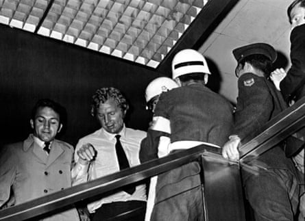

I t remains one of the most notorious and unresolved episodes in World Cup history. Now diplomatic cables have emerged in Colombia shedding fresh light on the diplomatic frenzy caused by the arrest of Bobby Moore , then captain of the reigning champions, England, days before the start of the 1970 tournament in Mexico.
The previously unseen documents show how Moore’s trip to the Fuego Verde jewellery shop in Bogotá, the Colombian capital, sparked a desperate campaign from the British Foreign Office to free the West Ham centre-back. The enormous pressure exerted on Colombia by the Foreign Office may have swayed the judge’s decision in the case, a new podcast series El Capitán y el Brazalete de Esmeraldas (The Captain and the Emerald Bracelet) concluded.
The podcast hears from the shop assistant, Clara Padilla, who accused Moore of swiping the £600 emerald bracelet while accompanied by Bobby Charlton and another teammate. Padilla broke her silence for the first time in more than 50 years, shortly before she died of cancer in February, to maintain that Moore had indeed taken the bracelet five decades ago.
“I just wanted people to know that I was never lying, I never accused Bobby Moore falsely,” she told the podcast days before her death. “I know what I saw.”
The allegations that Moore had casually stolen the jewellery on the eve of the World Cup threatened to prevent him from travelling to Mexico, potentially derailing England’s chances of defending the trophy and sending the English tabloids into a frenzy.
Leading theories included the Brazilian Football Association conspiring to eliminate their toughest potential opponents or that Colombia’s murky emerald trade was trying to squeeze money out of Moore. At the time Moore said only: “I’m not too sure what it’s all about. As far as I can make out, there’s nothing in it. I can assure you of that.”
But Moore’s biographer, Jeff Powell, wrote in a later edition of his book that “perhaps one of the younger lads with the squad did something foolish, a prank with unfortunate circumstances”, hinting that Moore had told a different version of events to him.
The cables examined by the podcast add weight to the theory that the scandal was a team prank that blew out of control. They also suggest the investigation could have been swayed in Moore’s favour by intense diplomatic pressure, with Colombian officials doing whatever they could to bury the investigation.
Bobby Moore leaves the Fuego Verde jewellery shop in Bogotá, where it was claimed he had stolen a bracelet.Photograph: AP
In one telegram at the height of the scandal, the British ambassador, Richard Rogers, told London that officials from Colombia’s national intelligence agency had assured him “no legal action would be taken without consultation with the embassy”, adding: “We also ensured that the magistrate concerned was privately made aware of the awkward implications of the case for Colombia because of the strong interest of British and world public opinion.”
The document shows the UK was strongly reminding Colombia that it was set to host the 1986 World Cup and the scandal could tarnish its global image and burn its chances of hosting the tournament. Others suggest their diplomatic reach extended further. In a later telegram, Rogers said the director of Colombia’s national intelligence agency, Gen Luis Etilio Leyva, had paid a visit to the judge overseeing the case. With the green light from the president and foreign minister – both under pressure from the UK – Leyva warned Judge Pedro Dorado of the political consequences of jailing Moore.
The idea that Padilla had framed Moore quickly became “the official story”, said Camilo Macías, one of the podcast’s producers. “Moore had the full backing of the British and Colombian governments, Colombian police and intelligence agencies, the British and Colombian media, and much of the public opinion on both sides. Against this overwhelming chorus, Clara’s voice was buried.”
Moore was released three days before the tournament kicked off in the Azteca. Even Harold Wilson, the British prime minister, was abreast of the events, fearing if the government did not get Moore on a plane to Mexico City, Labour could lose the next election. Documents show Foreign Office officials became uncomfortable with the PM’s involvement.
As the face of the supposedly dirty plot to frame Moore, Padilla’s photo was splashed across the front page of the Daily Mirror. The 24-year-old was vilified at home, too, where Colombians adored British footballers after several English players, including the Manchester United winger Charlie Mitten, played for the Bogotá side Independiente Santa Fe.
Padilla says she was forced to leave for the US, where she had lived ever since, after receiving up to 15 phone calls a day as well as numerous death threats. “I was a victim for many, many years of being accused of all kinds of horrible things. The worst one was that I was lying, that I was trying to destroy Bobby Moore,” she told the podcast.
Close to her death from cancer, Padilla maintained that she told no lie and revealed previously untold details of how Moore snatched the bracelet. “They came in and two of them sat down to flirt and distract me,” Padilla said, alleging that two of the England pranksters turned on their charm to compliment her English language skills and her good looks.
“Bobby Moore was there in the door where the display cabinet was and I saw him open the cabinet, take the bracelet and put it in his pocket, looking at me the whole time. It was like he was teasing me.”
Sir Keith Morris, chargé d’affaires at the time, has insisted the UK did not exert undue pressure on its Colombian counterparts but admitted the case was given special attention given the team were national heroes. “Would we have done quite as much for any British citizen? No. But there was a national interest involved,” Morris said. “He [Judge Pedro Dorado] was, I am sure, aware of Colombian public opinion on the subject. He found a solution to fit the case.”